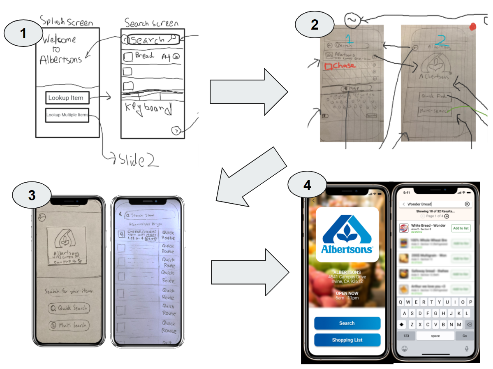

ShoppinGo
By Neeraj Dharmadhikari & Arthur Tham
An Application Design for Efficient Shopping
Research & Development Project in Ubiquitous Computing – Winter 2021 (INF241)
- Abstract We developed a prototype design for an efficient shopping experience that embeds the store kiosk concept into mobile devices and optimizes the route shoppers take to purchase items. Our prototype allows users to add shopping items to a digitized shopping list and find the fastest route to gather all the items on the list. We utilized Figma to visualize our design and interviewed testers that provided their thoughts on a mobile-enhanced shopping experience that uses location services and image recognition. We found that potential users have varying shopping habits that can be enhanced by ubiquitous technology.
- CCS CONCEPTS • Human-centered computing ~ Ubiquitous and mobile computing ~ Ubiquitous and mobile devices ~ Smartphones • Networks ~ Network services ~ Location based services • Human-centered computing ~ Human computer interaction (HCI) • Security and privacy ~ Human and societal aspects of security and privacy
Introduction
Supermarkets and wholesale stores are increasingly popular as an essential service to society. Modern technology such as
display boards enhances this experience by revealing information on where to find specific products in stores. There are
in-store kiosks that help customers find the products they want to purchase. However, these kiosks only point the
shoppers towards a general location of where the items may be, and the shoppers would need to return to the kiosk to
find their next item. Furthermore, not all stores have kiosks, and navigating a store to find specific items could
easily become overwhelming.
We want to make a more efficient shopping experience by embedding the kiosk concept into their mobile devices and
optimizing the route each shopper takes to purchase all wanted items. In order to do so, we designed a prototype that
will allow shoppers to look up items in a store and calculate the quickest route to all those items.
During our design process, we came across different ways that people shop and learned to adjust our mobile application
to complement those ways. We found that utilizing sensors on mobile devices can enhance the shopping experience but might
come with unintended privacy concerns from multiple parties. We aimed to strike a balance between convenience and
privacy in our application.
Our prototype-design study contributed to ubiquitous computing as follows. First, it describes ShoppinGo, a mobile
shopping application that features indoor-map navigational capabilities to optimally guide customers to their desired
items on their shopping lists. Second, it sheds light on whether customers would benefit from this application, which
depends on their current shopping habits and goals. Last, it highlights the customers’ reactions towards accessing
sensors and whether utilizing them is useful.
Evolution Of Our Application Design

Related Works
Enhancing the shopping experience using digital technology is a concept that has been tackled by many
researchers and companies. The team at MapsPeople developed MapsIndoors, an indoor positioning
application that advertises a digital shopping experience for customers that like to do their shopping in-person. They found that 73% of consumers
prefer to look up information on their smartphones, taking the convenience of having a mobile device over finding a staff member for help. By
creating an application that supports navigational transitions from outdoor to indoor, it would greatly increase customer satisfaction.
Andrew Makarov, an Augmented Reality Solution Architect at Mobidev
, discusses in their company blog the implications of using Augmented Reality (AR) in indoor navigation applications. Makarov specifically focuses the
article on the use of ARKit for iOS and ARCore for Android and how these technology kits have to be precise in these three modules:
Positioning, Mapping, and Rendering. Mapping refers to the creation of a route given a starting location and a destination. Rendering refers to the actual
use of cameras to load in the positions of items and then creating a 3-dimensional route that adds to the real-world view.
Positioning, according to Makarov, is the biggest challenge since the precision has to be pretty much perfect on a 3-dimensional plane for indoor-mapping to be useful.
Design Stage
We created a Figma prototype of ShoppinGo, a mobile shopping application that features
indoor-map navigation capabilities to optimally guide customers to their desired items on their shopping lists. When the customer opens the
application, they are greeted with a welcome screen and prompts them to look up the store they are visiting. After requesting permission to use
the location sensors on their mobile devices, the application detects their location and determines which store they are in.
Upon the customer’s confirmation, they are directed to the store’s home page where they can either look up a single item or make a list of items,
with the ultimate goal of finding the most convenient route to them. We split up this functionality because if a customer wants to find a single item,
then they can find the direct route to that item quickly; however, if a customer wants to find multiple items, then they can take advantage of the
shopping list functionality and find all the items in one session. The rationale for calling the buttons “Search” and “Shopping List” instead of
quick-search and multi-search was that the latter two did not seem to imply that the multi-search would lead to a shopping list. During our prototype testing, customers pointed out that they did not understand the difference in functionality when they first looked at it. They made the suggestion to instead have a shopping list option.
Quick Search: Search for One Item
Customers can quickly search for one item in the store they are shopping at. To initiate a search, they
tap on the “Search” button on the store’s home page. A screen with a search bar and a list of suggested items is displayed. The customer can
then type in the product they are looking for, and the list will populate with the resulting items and information, including but not limited to its
inventory count, aisle location, and photo.
When the customer taps on the item, they are led to the routing screen. This screen shows an overhead view of the store with the customer’s location,
the item’s location, and the quickest route to that item. The route is denoted by a bold, colored line with embedded arrows, making it clear which
way the customer should walk to get to the item.
Once the customer arrives at the item’s location, they can press the “Done” button to complete their search. However, if the customer
cannot find the item, they can press the “Scan with Camera” button to enter AR mode. On this screen, the application displays what the camera is capturing and attempts to look for the item via image recognition. If it finds the item, it will highlight it by filtering the background to grayscale and imprinting a green target on top of the item.
Multi-Search: Creating and Searching for a List of Items
Multi-search functionality is induced by clicking on the “Shopping List” button on a store’s home
page. This will lead the customer to create a list of items by adding items one at a time. Alternatively, if a customer has decided to use
quick-search, they can always still add items from quick-search to their list by clicking on the "Add to list” button. The intention here was
to create a one-way bridge that can allow the customer to transition from quick-search to multi-search if they realize they want to also look up
more items.
Once on the shopping list view, customers can use the “+” icon and look up items in a store one at a time and add them to the list. As more
items are added, the list reorganizes itself by the fastest route. The rationale here is to save customers from going back and forth from one end of the
store to the other again and again if the items were originally added in that order.
Once the customer feels they have added all the items to the list, they tap on “Route Preview” and “Start Route” in that order. The Route
Preview page, similar to the Google maps route preview, is intended to show the user an overview of the complete route to all their items. Clicking on
“Route” from this page on will follow the same functionality as described in the quick-search subsection above. This time, it will route one item
at a time and instead of the “Finish” option, it will have a “Next Item” option instead.
CLICK HERE FOR OUR FIGMA PROTOTYPE OR FEEL FREE TO PLAY AROUND BELOW